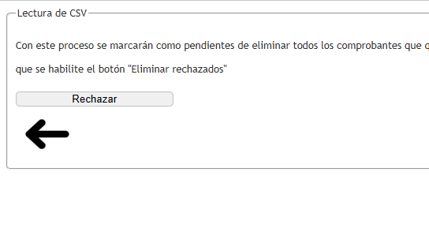
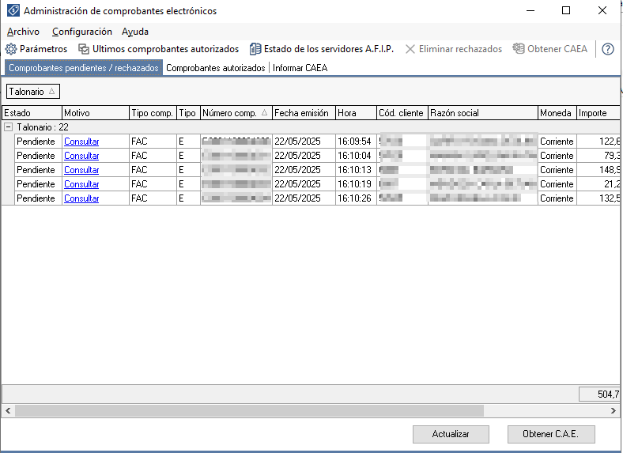
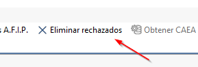
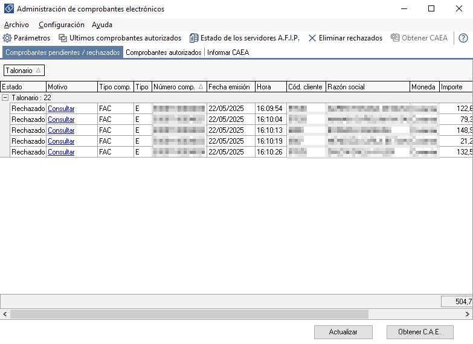
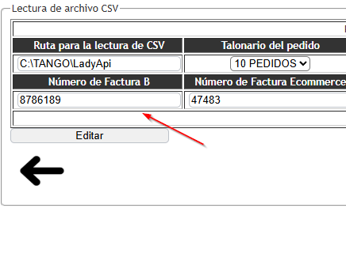

Módulo del Sistema
Rechazar pendientes.
- Versión: LadyApi001
- Fecha de actualización: 20/05/2025
- Propósito: Rechazo de comprobantes pendientes de CAE.
Descripción General
¿Qué hace este módulo?
Este módulo te permite cambiar el estado de comprobantes que ya fueron procesados y que están pendientes de obtener CAE en el sistema de TANGO GESTION. Si el usuario llega a arrepentirse de haber procesado los comprobantes por cualquier motivo, puede presionar el botón de rechazar. Luego, en el sistema Tango Gestión desde la ventana “Administración de comprobantes electrónicos” podrá visualizar los comprobantes generados en estado rechazado y así tener la posibilidad de borrarlos con la opción de “Eliminar rechazados”.
Pantalla principal
La pantalla principal consta de solo un botón con el nombre de rechazar, al presionar ese botón empezara el proceso de cambio de estado de todos los comprobantes.

Cuando se terminan de procesar los comprobantes en el módulo de “Procesar datos”, desde el sistema de TANGO GESTION entrando a la ventana de “Administración de comprobantes electrónicos” podrá ver los comprobantes en estado “Pendiente” de obtener CAE.

Al rechazar un comprobante desde el módulo Rechazar pendientes, en la ventana de Administración de comprobantes electrónicos de TANGO GESTION, el estado cambiará de 'Pendiente' a 'Rechazado'. A continuación, haga clic en 'Actualizar' en el Administrador de Comprobantes Electrónicos para habilitar el botón 'Eliminar rechazados.


Este módulo ofrece una solución sencilla y eficaz para gestionar comprobantes pendientes que ya no se desean enviar a ARCA. Utilizando la opción Rechazar, el usuario puede marcar dichos comprobantes como Rechazados y luego eliminarlos de forma definitiva desde la Administración de comprobantes electrónicos. De esta manera, se mantiene el sistema limpio y organizado, evitando errores o confusiones en el proceso de facturación electrónica.
IMPORTANTE:br>
Cuando hacemos una eliminación de un comprobante desde el “Administrador de comprobantes electrónicos” se debe volver a dejar el comprobante con el numero anterior al rechazo desde el modulo “Configuración de directorio”, volviendo a la numeración original y presionando el botón de “editar”.
